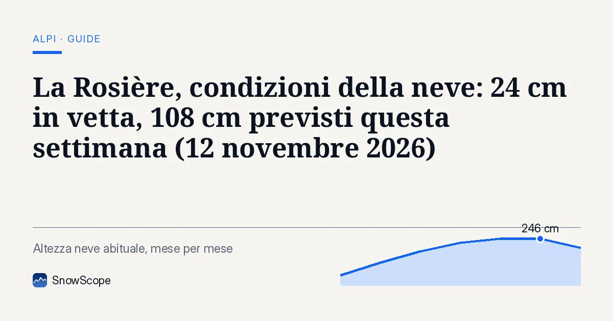
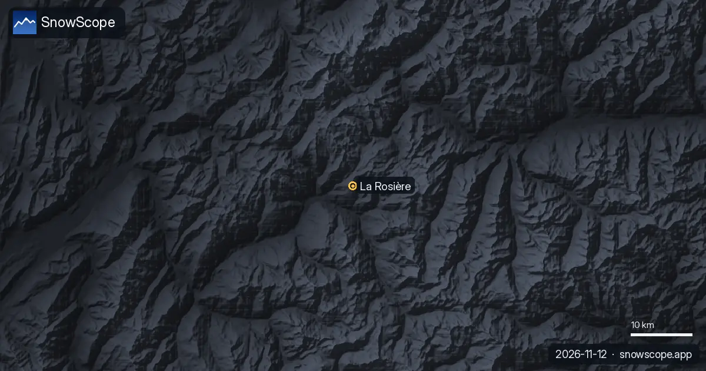

La Rosière, condizioni della neve: 24 cm in vetta, 108 cm previsti questa settimana (12 novembre 2026)
La Rosière si trova in alto al confine Francia–Italia, i suoi pendii superiori ancora coperti da 24 cm degli arrivi precoci di novembre. La settimana che viene porta un cambiamento importante: le previsioni mostrano 108 cm che si accumulano in vetta (2799 m) e 61 cm a media montagna (1995 m), sebbene la base del paese rimanga all'ombra della sua stessa esposizione verso sud.
Le previsioni neve in tempo reale per La Rosière nell'app SnowScopeAltezza neve, allerte powder e mappa 3D, gratis.

Quello che vedete ora l'11 novembre
La vetta di La Rosière ha 24 cm, accumulati soprattutto nell'ultima settimana—7 cm sono caduti negli ultimi due giorni. Media montagna non ha neve misurabile oggi malgrado i 9 cm guadagnati negli stessi sette giorni; il sole e il terreno hanno consumato la neve sottile dei primi arrivi a quella quota più bassa. Il paese è completamente scoperto.
Sui pendii veri, una gully esposta a nord manterrà più neve di una pista soleggiata della profondità mostrata qui, e la neve di inizio stagione è abbastanza sottile che le rocce possono affiorare.
Sette giorni di neve davanti
Nei sette giorni completi, sono previsti 108 cm in vetta, 61 cm a media montagna e 4 cm al paese. I primi due giorni sono la parte più affidabile di questa previsione; oltre, la direzione conta più del totale esatto.
La Thuile, partner italiano di La Rosière oltre il Piccolo San Bernardo, di solito si trova nello stesso sistema meteorologico e vedrà un accumulo simile.
Neve di novembre negli ultimi inverni
In 46 inverni la prima neve raggiunge la vetta il 28 settembre, media montagna il 12 ottobre e il paese il 22 ottobre. Un novembre tipico lascia 51 cm in vetta, 21 cm a media montagna e 11 cm al paese. La copertura oggi è sotto la media ovunque, ma la previsione cambierebbe quella situazione entro la prossima settimana.
Lo schema di solito si approfondisce nel corso dell'inverno: dicembre aggiunge tipicamente 119 cm in vetta e 64 cm a media montagna. Febbraio diventa il mese più nevoso al paese (media 94 cm), mentre marzo e aprile raggiungono i massimi più in alto (153 cm e 246 cm a media montagna e vetta rispettivamente).

Perché la base del paese mantiene meglio di quanto ci si aspetterebbe
Per una stazione esposta a sud a 1192 m, la neve al paese di La Rosière è sorprendentemente duratura. In molti inverni (9 su 10), ci sono sette settimane separate quando 50 cm o più giacciono lì. La settimana 9, attorno a fine febbraio, raggiunge 101 cm in un inverno tipico. I massimi mediani su tutti gli inverni sono 117 cm al paese, 182 cm a media montagna e 306 cm in vetta. L'inverno scorso è stato vicino: 140, 203 e 295 cm rispettivamente.
Il terreno tracciato copre 68 km di piste e 29 impianti tra 1192 m e 2799 m, condiviso con La Thuile oltre il confine.
Come leggere questa previsione
Un totale di sette giorni di 108 cm in vetta è un numero grande e ha incertezza. Le prime 48 ore—circa 37 cm in vetta—sono le più affidabili per pianificare. Oltre, il vento ridistribuirà la neve, soprattutto sui crinali alti, spostandola nelle gully dove si accumula più velocemente.
La neve di inizio stagione è diversa dalla neve di inverno profondo: il terreno sottostante è più caldo e può ancora assestirsi o sciogliersi leggermente; le rocce possono rompere la superficie; e i fiocchi precoci spesso hanno bassa densità. Pianificate per la perturbazione, ma non date per scontato che ogni centimetro rimanga dove cade.
Consigli per sciatori
- Usate le prime 48 ore della previsione (circa 20 cm in vetta) come ancora di pianificazione. I 108 cm completi sono possibili ma meno certi.
- Il paese rimarrà probabilmente scoperto o quasi scoperto questa settimana—andate a media montagna o più in alto per trovare la neve nuova.
- Prima di qualsiasi discesa fuoripista, controllate il bollettino valanghe di Météo-France: 100 cm di neve nuova in una settimana crea instabilità seria.
- Il vento sui crinali alti sposterà la neve nuova nelle gully e sui pendii sottovento; cercate terreno in ombra se le rocce affiorano ancora attraverso la copertura iniziale.
- Il calendario di La Rosière controlla quando gli impianti aprono; la mappa SnowScope mostra la profondità della neve, non lo stato operativo.
Su questi numeri
Le altezze neve delle località sono la neve più alta sui pendii superiori alla data indicata; sono stime per un'area, non una misura in un punto. Le previsioni possono cambiare. Leggi sempre il bollettino valanghe ufficiale prima del fuoripista.
Bollettini valanghe ufficiali: Météo-France – Bulletin d'estimation du risque d'avalanche
Cita questo articolo
Per ricerca, didattica o stampa: numeri e grafici sono liberamente riutilizzabili con licenza CC BY 4.0 citando così.
SnowScope (2026), La Rosière, condizioni della neve: 24 cm in vetta, 108 cm previsti questa settimana (12 novembre 2026), https://snowscope.app/blog/it/2026/11/la-rosiere-snow-conditions-12-november-2026.html, consultato il 2026-11-12
SnowScope (Atlas Labs). (2026, November 12). La Rosière, condizioni della neve: 24 cm in vetta, 108 cm previsti questa settimana (12 novembre 2026). SnowScope snow reports. https://snowscope.app/blog/it/2026/11/la-rosiere-snow-conditions-12-november-2026.html
BibTeX
@misc{snowscope2026larosieresnowconditions1,
author = {{SnowScope (Atlas Labs)}},
title = {La Rosière, condizioni della neve: 24 cm in vetta, 108 cm previsti questa settimana (12 novembre 2026)},
year = {2026},
month = nov,
howpublished = {\url{https://snowscope.app/blog/it/2026/11/la-rosiere-snow-conditions-12-november-2026.html}},
note = {Published 2026-11-12 09:53 UTC; accessed 2026-11-12}
}· CC BY 4.0 · Metodi, dati e strumenti →
La Rosière: neve e temperatura per quota, quest'inverno vs lo scorso (strumenti) →
Segui La Rosière
Gratis: un messaggio quando arriva la neve e il meteo ogni mattina.